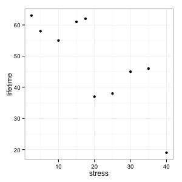
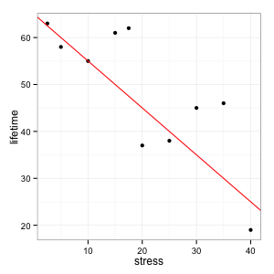

name: inverse layout: true class: center, middle, inverse --- # STAT 105: Lecture 7 ## Chapter 4: Describing Relationships Between Variables .footnote[Course page: [imouzon.github.io/stat105](https://imouzon.github.io/stat105)] --- # Recap ## Quantiles and Their Plots --- layout:false .left-column[ ## Recap ### `\(Q(p)\)` ] .right-column[ ### The Quantile Function For \\(0 \le p \le 1\\) and sample size \\(n\\) we let \\(i = \lfloor n \cdot p + 0.5 \rfloor \\) and find the \\(p^{th}\\) quantile using: <!-- <span style = "font-size: 70%"> </span> --> \\[ Q(p) = x\_i + (n \cdot p + 0.5 - i) (x\_{i + 1} - x\_i) \\] ### Recall - if `\(n \cdot p + .5\)` is an integer, we are going to use an `\(x_i\)` from our sample. - if `\(n \cdot p + .5\)` is **not** an integer, we add a little bit ] --- .left-column[ ## Recap ### `\(Q(p)\)` ] .right-column[ ### The Quantile Function For \\(0 \le p \le 1\\) and sample size \\(n\\) we let \\(i = \lfloor n \cdot p + 0.5 \rfloor \\) and find the \\(p^{th}\\) quantile using: <!-- <span style = "font-size: 70%"> </span> --> \\[ Q(p) = x\_i + (n \cdot p + 0.5 - i) (x\_{i + 1} - x\_i) \\] ### QQ Plots A plot that compares the result of calculating \\( Q(p) \\) using one set of values to the results of calculating \\( Q(p) \\) on a second set of data. We can compare the set of values we are interested in to either 1. another set of values 2. the quantiles we would get for a specific set of _theoretcial_ quantiles. ] --- layout:false .left-column[ ## Recap from Lecture 6 ### `\(Q(p)\)` ] .right-column[ **Example** Using the quantile function , find the .10, .17, .25, .30, .50, .70, and .90 quantiles for the sample: <center> 8, 19, 34, 57, 109 </center> **Solution** | \\(p\\) | .10 | .17 | .25 | .30 | .50 | .70 | .90 | |----------|-----|-----|-----|-----|-----|-----|-----| | \\(n \\cdot p + 0.5\\) | | | | | | | | | \\(i\\) | | | | | | | | | \\(Q(p)\\) | | | | | | | | 1. Start with a simple table ] --- layout:false .left-column[ ## Recap ### `\(Q(p)\)` ] .right-column[ **Example** Using the quantile function , find the .10, .17, .25, .30, .50, .70, and .90 quantiles for the sample: <center> 8, 19, 34, 57, 109 </center> **Solution** | \\(p\\) | .10 | .17 | .25 | .30 | .50 | .70 | .90 | |----------|-----|-----|-----|-----|-----|-----|-----| | \\(n \\cdot p + 0.5\\) | 1 | 1.35 | 1.75 | 2 | 3 | 4 | 5 | | \\(i\\) | 1 | 1 | 1 | 2 | 3 | 4 | 5 | | \\(Q(p)\\) | | | | | | | | 1. Start with a simple table 2. Find all the values of `\(n \cdot p + 0.5\)` and `\(i = \lfloor n \cdot p + 0.5 \rfloor\)` ] --- layout:false .left-column[ ## Recap ### `\(Q(p)\)` ] .right-column[ **Example** Using the quantile function , find the .10, .17, .25, .30, .50, .70, and .90 quantiles for the sample: <center> 8, 19, 34, 57, 109 </center> **Solution** | \\(p\\) | .10 | .17 | .25 | .30 | .50 | .70 | .90 | |----------|-----|-----|-----|-----|-----|-----|-----| | \\(n \\cdot p + 0.5\\) | 1 | 1.35 | 1.75 | 2 | 3 | 4 | 5 | | \\(i\\) | 1 | 1 | 1 | 2 | 3 | 4 | 5 | | \\(Q(p)\\) | 8 | | | 19 | 34 | 57 | 109 | 1. Start with a simple table 2. Find all the values of `\(n \cdot p + 0.5\)` and `\(i = \lfloor n \cdot p + 0.5 \rfloor\)` 3. If `\(n \cdot p + 0.5 = i\)` then `\(Q(p) = x_i\)` (we add nothing) ] --- layout:false .left-column[ ## Recap ### `\(Q(p)\)` ] .right-column[ **Example** Using the quantile function , find the .10, .17, .25, .30, .50, .70, and .90 quantiles for the sample: <center> 8, 19, 34, 57, 109 </center> **Solution** | \\(p\\) | .10 | .17 | .25 | .30 | .50 | .70 | .90 | |----------|-----|-----|-----|-----|-----|-----|-----| | \\(n \\cdot p + 0.5\\) | 1 | 1.35 | 1.75 | 2 | 3 | 4 | 5 | | \\(i\\) | 1 | 1 | 1 | 2 | 3 | 4 | 5 | | \\(Q(p)\\) | 8 | 11.85 | | 19 | 34 | 57 | 109 | 1. Start with a simple table 2. Find all the values of `\(n \cdot p + 0.5\)` and `\(i = \lfloor n \cdot p + 0.5 \rfloor\)` 3. If `\(n \cdot p + 0.5 = i\)` then `\(Q(p) = x_i\)` 4. Calculate the other values: <span style = "font-size: 80%"> `\[ \begin{align} Q(.17) &= x_i + (n \cdot p + 0.5 - 1)(x_{i+1} - x_i) \\\\ &= x_1 + (5 \cdot .17 + 0.5 - 1)(x_{2} - x_1) \\\\ &= 8 + (0.85 + 0.5 - 1)(19 - 8) \\\\ &= 8 + (0.35)(11) \\\\ &= 11.85 \end{align} \]` </span> ] --- layout:false .left-column[ ## Recap ### `\(Q(p)\)` ] .right-column[ **Example** Using the quantile function , find the .10, .17, .25, .30, .50, .70, and .90 quantiles for the sample: <center> 8, 19, 34, 57, 109 </center> **Solution** | \\(p\\) | .10 | .17 | .25 | .30 | .50 | .70 | .90 | |----------|-----|-----|-----|-----|-----|-----|-----| | \\(n \\cdot p + 0.5\\) | 1 | 1.35 | 1.75 | 2 | 3 | 4 | 5 | | \\(i\\) | 1 | 1 | 1 | 2 | 3 | 4 | 5 | | \\(Q(p)\\) | 8 | 11.85 | 16.25 | 19 | 34 | 57 | 109 | 1. Start with a simple table 2. Find all the values of `\(n \cdot p + 0.5\)` and `\(i = \lfloor n \cdot p + 0.5 \rfloor\)` 3. If `\(n \cdot p + 0.5 = i\)` then `\(Q(p) = x_i\)` 4. Calculate the other values: <span style = "font-size: 80%"> `\[ \begin{align} Q(.25) &= x_i + (n \cdot p + 0.5 - 1)(x_{i+1} - x_i) \\\\ &= x_1 + (5 \cdot .25 + 0.5 - 1)(x_{2} - x_1) \\\\ &= 8 + (1.25 + 0.5 - 1)(19 - 8) \\\\ &= 8 + (0.75)(11) \\\\ &= 16.25 \end{align} \]` </span> ] --- .left-column[ ## Recap ### `\(Q(p)\)` ### Plots ] .right-column[ ### Boxplots Use `\(Q(.25), Q(.5), Q(.75)\)` along with IQR to show spread of the data over quartiles and identify "outlying" values. ### Quantile Plots: Scatterplots using quatiles and their corresponding values. ### Quantile-Quantile Plots - For samples of equal size `\(n\)` we can create a plot that helps us identify if the spread of the data is similar - We can also compare the quantiles from our sample to the quantiles of some known distribution ] --- .left-column[ ## Recap ### `\(Q(p)\)` ### Plots ] .right-column[ ### Quantile-Quantile Plots **Example** Compare the following three samples using Quantile-Quantile plots: - Sample 1: 46, 40, 39, 37, 45, 38, 43 - Sample 2: 141, 123, 120, 112, 136, 115, 133 - Sample 3: 99, 76, 92, 82, 94, 80, 90 **Approach** We create a table of the quantiles that correspond to data points. ] --- .left-column[ ## Recap ### `\(Q(p)\)` ### Plots ] .right-column[ ### Quantile-Quantile Plots **Example** Compare the following three samples using Quantile-Quantile plots: - Sample 1: 82, 92, 51, 88, 63, 92, 85 - Sample 2: 41, 48, 31, 37, 39, 38, 42 - Sample 3: 125, 146, 95, 114, 118, 116, 128 **Step 0**: Determine which quantiles correspond to the values in our set: - There are \\(n = 7\\) observations in our data. - Find \\(\\frac{i - 0.5}{7}\\) for \\(i = 1, 2, \ldots, 7\\) | \\(i\\) | 1 | 2 | 3 | 4 | 5 | 6 | 7 | |--|--|--|--|--|--|--|--| | \\(p\\) | 0.07 | 0.21 | 0.36 | 0.5 | 0.64 | 0.79 | 0.93 | ] --- .left-column[ ## Recap ### `\(Q(p)\)` ### Plots ] .right-column[ ### Quantile-Quantile Plots **Example** Compare the following three samples using Quantile-Quantile plots: - Sample 1: 82, 92, 51, 88, 63, 92, 85 - Sample 2: 41, 48, 31, 37, 39, 38, 42 - Sample 3: 125, 146, 95, 114, 118, 116, 128 **Step 1**: Create a table of the quantiles that correspond to data points: | | \\(p\\) | 0.07 | 0.21 | 0.36 | 0.5 | 0.64 | 0.79 | 0.93 | |--|--|--|--|--|--|--|--|--| | Sample 1 | \\(Q(p)\\) | 51 | 63 | 82 | 85 | 88 | 92 | 92 | | Sample 2 | \\(Q(p)\\) | 31 | 37 | 38 | 39 | 41 | 42 | 48 | | Sample 3 | \\(Q(p)\\) | 95 | 114 | 116 | 118 | 125 | 128 | 146 | ] --- .left-column[ ## Recap ### `\(Q(p)\)` ### Plots ] .right-column[ ### Quantile-Quantile Plots **Example** Compare the following three samples using Quantile-Quantile plots: - Sample 1: 82, 92, 51, 88, 63, 92, 85 - Sample 2: 41, 48, 31, 37, 39, 38, 42 - Sample 3: 125, 146, 95, 114, 118, 116, 128 **Step 2**: Use the paired quantiles to make the plots    ] --- name: inverse layout: true class: center, middle, inverse --- # Chapter 4, Section 1 ## Linear Relationships Between Variables --- layout: false .left-column[ ## Describing Relationships ### Idea ] .right-column[ ## Describing Relationships We have a standard idea of how our experiment works: <center> <img src="figure/schemeit-project.png" alt="dmc logo" height="125"> </center> *and* we know that with an valid experiment, we can say that the changes in our experimental variables actually *cause* changes in our response. But how do we describe those response when we know that random error would make each result different... ] --- .left-column[ ## Describing Relationships ### Idea ] .right-column[ ## The Underlying Idea <center> <img src="figure/schemeit-project.png" alt="dmc logo" height="125"> </center> We start with a valid mathematical model, for instance a line: \\[ y = \beta_0 + \beta_1 \cdot x \\] In this case, - \\(\beta_0\\) is the intercept - when \\(x = 0\\), \\(y = \beta_0\\). - \\(\beta_1\\) is the slope - when \\(x\\) increase by one unit, \\(y\\) increases by \\(\beta_1\\) units. ] --- .left-column[ ## Describing Relationships ### Idea ### Ex: Bar Stress ] .right-column[ ## Example: Stress on Bars An experiment examining the effects of **stress** on **time until fracture** is performe by taking a sample of 10 stainless steel rods immersed in 40% CaCl solution at 100 degrees Celsius and applying different amounts of uniaxial stress. The results are recorded below: | | | | | | | | | | | | |--------------------------------------|------|------|------|------|------|------|------|------|------|------| | **stress** \\((\text{kg/mm}^2)\\) | 2.5 | 5.0 | 10.0 | 15.0 | 17.5 | 20.0 | 25.0 | 30.0 | 35.0 | 40.0 | | **lifetime** (hours) | 63 | 58 | 55 | 61 | 62 | 37 | 38 | 45 | 46 | 19 | A good first place to investigate the relationship between our experimental variables (in this case, stress) and the response (in this case, lifetime) is to use a scatterplot and look to see if there might be any basic mathematical function that could describe the relationship between the variables. ] --- .left-column[ ## Describing Relationships ### Idea ### Ex: Bar Stress ] .right-column[ ** Example: Strain on Bars (continued) ** Our data: | | | | | | | | | | | | |--------------------------------------|------|------|------|------|------|------|------|------|------|------| | **stress** \\((\text{kg/mm}^2)\\) | 2.5 | 5.0 | 10.0 | 15.0 | 17.5 | 20.0 | 25.0 | 30.0 | 35.0 | 40.0 | | **lifetime** (hours) | 63 | 58 | 55 | 61 | 62 | 37 | 38 | 45 | 46 | 19 | - Plotting stress along the \\(x\\)-axis and plotting lifetime along the \\(y\\)-axis we get <center>  </center> ] --- .left-column[ ## Describing Relationships ### Idea ### Ex: Bar Stress ] .right-column[ ** Example: Strain on Bars (continued) ** Our data: | | | | | | | | | | | | |--------------------------------------|------|------|------|------|------|------|------|------|------|------| | **stress** \\((\text{kg/mm}^2)\\) | 2.5 | 5.0 | 10.0 | 15.0 | 17.5 | 20.0 | 25.0 | 30.0 | 35.0 | 40.0 | | **lifetime** (hours) | 63 | 58 | 55 | 61 | 62 | 37 | 38 | 45 | 46 | 19 | - Examining the plot, we might determine that there could be a linear relationship between the two. The red line looks like it fits the data pretty well. <center>  </center> ] --- .left-column[ ## Describing Relationships ### Idea ### Ex: Bar Stress ] .right-column[ ** Example: Strain on Bars (continued) ** Our data: | | | | | | | | | | | | |--------------------------------------|------|------|------|------|------|------|------|------|------|------| | **stress** \\((\text{kg/mm}^2)\\) | 2.5 | 5.0 | 10.0 | 15.0 | 17.5 | 20.0 | 25.0 | 30.0 | 35.0 | 40.0 | | **lifetime** (hours) | 63 | 58 | 55 | 61 | 62 | 37 | 38 | 45 | 46 | 19 | - But there are several other lines that fit the data pretty well, too. <center> <img src="figure/stress_lifetime_plot_line2.png" alt="dmc logo" height="250"> </center> - How do we decide which is best? ] --- .left-column[ ## Describing Relationships ### Idea ### Ex: Bars ### Fitting Lines ] .right-column[ ### Where the line comes from When we are trying to find a line that fits our data what we are _really_ doing is saying that there is a true physical relationship between our experimental variable \\(x\\) is related to our response \\(y\\) that has the following form: **Theoretical Relationship** \\[ y = \beta_0 + \beta_1 \cdot x \\] However, the response we observe is also effected by random noise: **Observed Relationship** \begin{align} y &= \beta_0 + \beta_1 \cdot x + \text{errors} \\\\ &= \text{signal} + \text{noise} \end{align} If we did a good job, hopefully we will have small enough errors so that we can say \\[ y \approx \beta_0 + \beta_1 \cdot x \\] ] --- .left-column[ ## Describing Relationships ### Idea ### Ex: Bars ### Fitting Lines ] .right-column[ ### Where the line comes from So, if things have gone well, we are attempting to estimate the value of \\(\beta_0\\) and \\(\beta_1\\) from our observed relationship \\[ y \approx \beta_0 + \beta_1 \cdot x \\] Using the following notation: - \\(b\_0\\) is the estimated value of \\(\beta\_0\\) and - \\(b\_1\\) is the estimated value of \\(\beta\_1\\) - \\(\hat{y}\\) is the estimated response We can write a **fitted relationship**: \\[ \hat{y} = b\_0 + b\_1 \cdot x \\] The key here is that we are going from the underlying _true, theoretical_ relationship to an _estimated_ relationship. In other words, we will never get the true values \\(\beta_0\\) and \\(\beta_1\\) but we can estimate them. However, this doesn't tell us _how_ to estimate them. ] --- .left-column[ ## Describing Relationships ### Idea ### Ex: Bars ### Fitting Lines ### Best Estimate ] .right-column[ ### The principle of Least Squares A good estimte should be based on the data. Suppose that we have observed responses \\(y\_1, y\_2, \ldots, y\_n\\) for experimental variables set at \\(x\_1, x\_2, \ldots, x\_n\\). Then the **Principle of Least Squares** says that the best estimate of \\(\beta\_0\\) and \\(\beta\_1\\) are values that **minimize** \\[ \sum_{i = 1}^n (y\_i - \hat{y}\_i)^2 \\] In our case, since \\( \hat{y}\_i = b\_0 + b\_1 \cdot x\_i \\) we need to choose values for \\(b\_0\\) and \\(b\_1\\) that minimize \\[ \sum\_{i = 1}^n (y\_i - \hat{y}\_i)^2 = \sum\_{i = 1}^n \left(y\_i - (b\_0 + b\_1 \cdot x\_i ) \right)^2 \\] In other words, we need to minimize something with respect to two values we get to choose - we can do this by taking derivatives. ] --- .left-column[ ## Describing Relationships ### Idea ### Ex: Bars ### Fitting Lines ### Best Estimate ] .right-column[ ### Deriving the Least Squares Estimates <span style = "font-size: 70%"> \begin{align} \sum\_{i = 1}^n (y\_i - \hat{y}\_i)^2 &= \sum\_{i = 1}^n \left(y\_i - (b\_0 + b\_1 x\_i ) \right)^2 \\\\ &= \sum\_{i = 1}^n \left(y\_i^2 - 2 y\_i (b\_0 + b\_1 x\_i ) + (b\_0 + b\_1 x\_i )^2\right) \\\\ &= \sum\_{i = 1}^n y\_i^2 - \sum\_{i = 1}^n 2 y\_i (b\_0 + b\_1 x\_i ) + \sum\_{i = 1}^n (b\_0 + b\_1 x\_i )^2 \\\\ &= \sum\_{i = 1}^n y\_i^2 - \sum\_{i = 1}^n (2 y\_i b\_0 + 2 y\_i b\_1 x\_i ) + \sum\_{i = 1}^n \left(b\_0^2 + 2 b\_0 b\_1 x\_i + (b\_1 x\_i )^2 \right) \\\\ &= \sum\_{i = 1}^n y\_i^2 - \sum\_{i = 1}^n 2 y\_i b\_0 - \sum\_{i = 1}^n 2 y\_i b\_1 x\_i + \sum\_{i = 1}^n b\_0^2 + \sum\_{i = 1}^n 2 b\_0 b\_1 x\_i + \sum\_{i = 1}^n b\_1^2 x\_i^2 \\\\ &= \sum\_{i = 1}^n y\_i^2 - 2 b\_0 \sum\_{i = 1}^n y\_i - 2 b\_1 \sum\_{i = 1}^n y\_i x\_i + n b\_0^2 + 2 b\_0 b\_1 \sum\_{i = 1}^n x\_i + b\_1^2 \sum\_{i = 1}^n x\_i^2 \\\\ \end{align} </span> ] --- .left-column[ ## Describing Relationships ### Idea ### Ex: Bars ### Fitting Lines ### Best Estimate ] .right-column[ ### Deriving the Least Squares Estimates (continued) - Since we have two "variables" we need to take derivates with respect to both. - Remember we have our data so we know every value of \\(x_i\\) and \\(y_i\\) and can treat those parts as constants. **The derivative with respect to \\(\mathbf{b\_0}\\)**: \\[ -2 \sum\_{i = 1}^n y\_i + 2 n b\_0 + 2 b\_1 \sum\_{i = 1}^n x\_i \\] **The derivative with respect to \\(\mathbf{b\_0}\\)**: \\[ -2 b\_0 \sum\_{i = 1}^n y\_i x\_i + 2 b\_0 \sum\_{i = 1}^n x\_i + 2 b\_1 \sum\_{i = 1}^n x\_i^2 \\] <span style = "font-size: 70%"> </span> ] --- .left-column[ ## Describing Relationships ### Idea ### Ex: Bars ### Fitting Lines ### Best Estimate ] .right-column[ ### Deriving the Least Squares Estimates (continued) We set both equal to 0 and solve them at the same time: \begin{align} -2 \sum\_{i = 1}^n y\_i + 2 n b\_0 + 2 b\_1 \sum\_{i = 1}^n x\_i &= 0 \\\\ -2 b\_0 \sum\_{i = 1}^n y\_i x\_i + 2 b\_0 \sum\_{i = 1}^n x\_i + 2 b\_1 \sum\_{i = 1}^n x\_i^2 &=0 \\\\ \end{align} We can rewrite the first equation as: \begin{align} b\_0 &= \frac{1}{n} \sum\_{i = 1}^n y\_i - b\_1 \frac{1}{n} \sum\_{i = 1}^n x\_i \\\\ &= \bar{y} - b\_1 \bar{x} \end{align} and then replace all \\(b\_0\\) in the second equation (there is some algebra type stuff along the way, of course) ] --- .left-column[ ## Describing Relationships ### Idea ### Ex: Bars ### Fitting Lines ### Best Estimate ] .right-column[ ### Deriving the Least Squares Estimates (continued) After a little simplification we arrive at our estimates: **Least Squares Estimates for Linear Fit** \begin{align} b\_0 &= \bar{y}- b\_1 \bar{x} \\\\ b\_1 &= \frac{\sum\_{i = 1}^n y\_i x\_i - n \bar{x} \bar{y}}{\sum\_{i = 1}^n x\_i^2 - n \bar{x}^2} \\\\ &= \frac{\sum\_{i = 1}^n (x\_i - \bar{x})(y\_i - \bar{y})}{\sum\_{i = 1}^n (x\_i - \bar{x})^2} \end{align} **Wrap Up** - Don't try to memorize the derivation. I will never ask you to do that on an exam. - Try to understand the simplification steps - the ones that moved constants out of summations for example. - This is one rule - there are others, but **Least Squares Estimates** have some useful properties that will make them the obvious best choice as we continue the course. ] --- layout: false # Topics covered in class (overhead): - Identifying possible linear relationships - Notation: - linear equation: `\(y \approx \beta_0 + \beta_1 x \)` - fitted equation: `\(\hat{y} = b_0 + b_1 x \)` - Fitting lines using the principle of least squares - Sample correlation `\(r\)` - Coeffecient of determination `\(R^2\)` - Residuals: `\(e_i = y_i = \hat{y_i}\)` - **Example**: Chapter 4, Section 1, Exercise 3